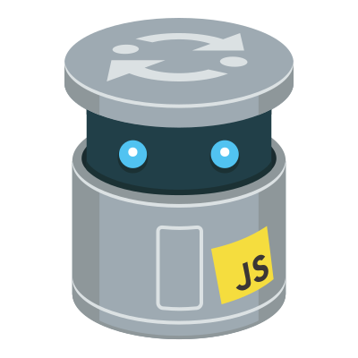

Minicade
Created by Chloe Varelidi / @varelidi
and Atul Varma / @toolness
What Is A Game Jam?
First, get a bunch of game-makers together.
Then pick a theme.
At the 2013 Mozilla Festival, Chloe and Syed of Babycastles inaugurated a mini game jam by whispering “dancing bears” into one person's ear.
.@Blackcorn666 @sssyed @varelidi Jam theme went through "broken telephone" process: started as "dancing bears" and ended "downtown groans"!
— Lorenzo Pilia (@LorenzoPilia) October 26, 2013Then Make Games.
This broken telephone process resulted in a series of ridiculous mini games all made in 60 minutes or less.
- Don't Speed Past the Police: The Game
- Groan Police
- Downtown Pong
- Downtown Groans
- Dancing Bears
- Dancing Bears Opposite Day
(For more details about the event, see Chloe's Twine game!)
The Opportunity
Experiencing the output of a game jam is hard.
Just Finding It Can Be An Adventure.
Where was that etherpad again?
Lists of Links Suck.
Transitioning from one game to another is difficult.
The Time Commitment Is Unknown.
Humans are busy and are easily distracted on the Web.
What if we turn the output into a game?
A meta-game, if you will.
Inspiration
Chloe introduced Atul to Dumb Ways To Die.
The microgame genre seems to have its beginnings in WarioWare, Inc: Mega Microgame$! (2003).
Constraint One
All games must be playable on the Web.
Game jam participants have varied skillsets.
So let them choose the tools they’re comfortable with.

Constraint Two
All games must take seconds to play.
This Keeps Source Code Simple.
A game that takes seconds to play will probably have an implementation that’s easy for others to understand and remix.
It's A Known Time Commitment.
Prospective players can experience the entirety of a game jam’s output in a few minutes.
Built-In Fault Tolerance.
If a microgame has game-crashing bugs, we simply move on to the next game after the maximum number of seconds have passed.